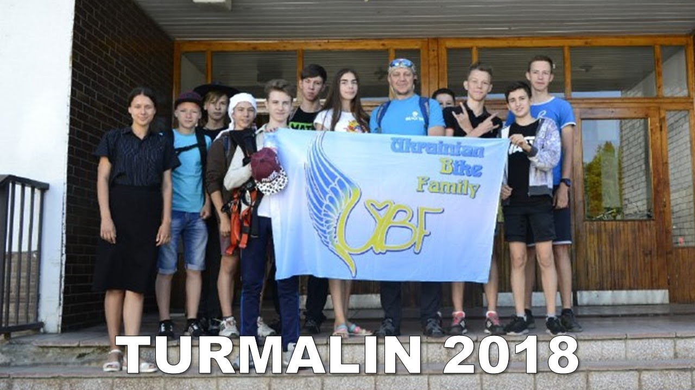

На своєму першому сайті я хотів розповісти чому я вступив до вивчення курсу з вебдизайну, за що мені подобається програмування і чому я маю намір і надалі вивчати програмування.
В цілому у мене є три основні причини це:
На перший погляд здавалося б навіщо нам потрібно програмування, якщо ми не маємо наміру бути програмістами в майбутньому, але всеж воно потрібне. Як ми знаємо сайт може коштувати в середньому 10000грн, а програми в рази дороще, але так як в сучасному житті без цих речей не обійтись є тільки 2 варіанти їх отримати: купити або зробити самим. Уявіть якщо ви відкрили свою кав'ярню і вам потрібно зробити сайт вашої фірми, щоб про вашу кав'ярню дізналось якомога більше людей і так, як вам потрібно отримати висококласний сайт ви будете вимушені заплатити не малу сумму грошей якої може і не бути, і тут на допомогу приходить курс 2019 з веброзробки BRAINBASKET і ви робите його самі. Аналогічно з програмами різних магазинів і ресторанів. Можливо приклад і дуже сумнівний, але всеж в ньому є доля правди. Тож я можу зробити простий висновок, що ніякі знання не бувають не потрібними і їх можна використовувати не тільки в роботі по спеціальності, а щей в звичаному житті.
Зараз зі мною навчається дуже багато інших унів, які як і я мають бажання вивчати веброзробку. Велика їх частина прибула з групи яка зветься TURMALIN.
В нашій команді є багато переможців олімпід з ІКТ прикладом яких є:
| Ім'я і Прізвище | Етап олімпіади | Результат |
|---|---|---|
| Тупота Артем | II | 2 місце |
| Паламарюк Максим | IV | 1 місце |
| Коваленко Едуард | IV | 3 місце |
| ... | ... | ... |
Нашого вчителя звати Карявка Сергій Сергійович. В нього є свій канал канал на Youtube де він викладає відео своїх походів і багато інших речей. Також в нього є дуже цікава сторінка Facebook. Ось посилання на них:
Youtube FacebookНа цьому можна закінчити і дякую вам за увагу!
Введи свої дані
Тепер нажми на кнопку щоб перевірити чи в тебе нормальна реакція
Добре пожартували і досить.
На цьому можна закінчити і дякую вам за увагу!